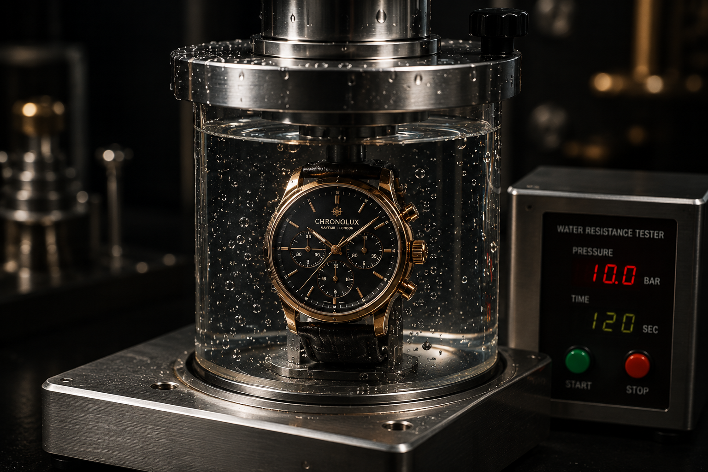
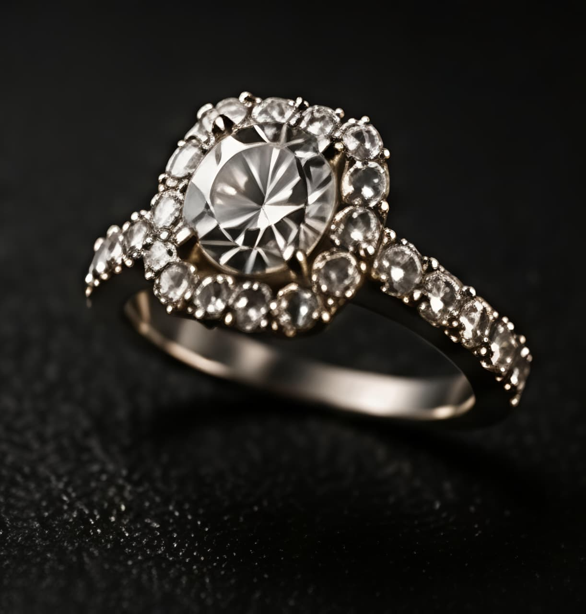
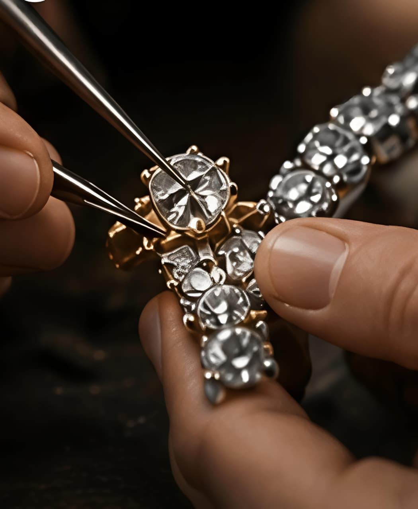
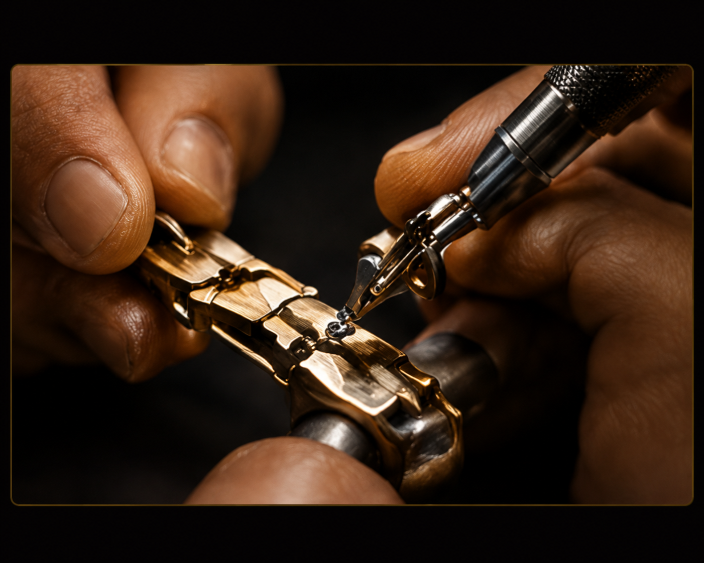
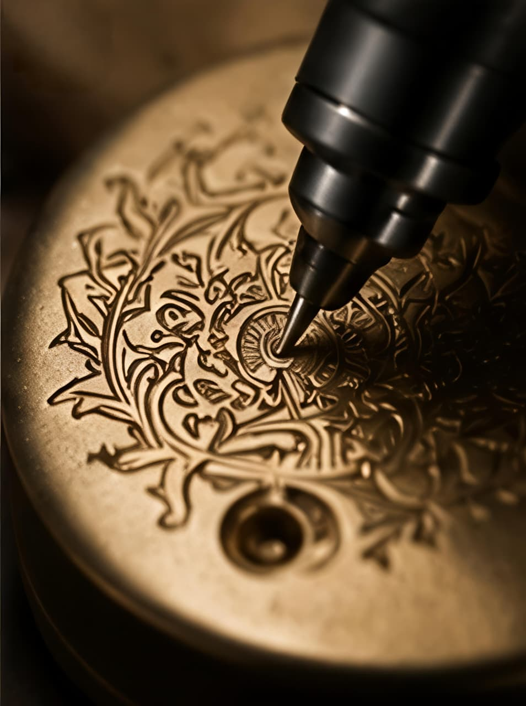

Quartz Battery Service
Quick, professional battery swaps for quartz watches with gasket inspection and water-resistance resealing included.
Turnaround: Same day
From £15
BookFrom quick battery swaps to complete movement overhauls - every timepiece receives expert care.
Quick, professional battery swaps for quartz watches with gasket inspection and water-resistance resealing included.
Turnaround: Same day
From £15
Book
Custom strap adjustments, bracelet link removal, and clasp repairs for leather, NATO, and metal bracelets.
Turnaround: Same day
From £10
Book
Full mechanical and automatic servicing with disassembly, cleaning, lubrication, regulation, and pressure testing.
Turnaround: 2–4 weeks
From £180
BookReplacement of scratched, cracked, or shattered watch crystals in mineral, sapphire, and acrylic materials.
Turnaround: 3–7 days
From £45
Book
Pressure testing and seal replacement to restore your watch's rated water resistance after battery or gasket service.
Turnaround: Same day
From £25
Book
Diagnosis and repair of mechanical, automatic, and quartz movements including parts replacement and regulation.
Turnaround: 1–3 weeks
From £95
BookExpert care for rings, chains, and gemstones - restoring beauty and integrity to your treasured pieces.

Expert sizing up or down for gold, platinum, and silver rings without compromising structural integrity.
Turnaround: 1–2 weeks
From £35
Book
Ultrasonic and steam cleaning to restore brilliance to diamonds, gemstones, and precious metal settings.
Turnaround: 3–5 days
From £20
BookPrecision soldering, link replacement, and reinforcement for necklaces, bracelets, and watch chains.
Turnaround: 3–7 days
From £30
Book
Secure re-setting of loose or missing diamonds and gemstones in prong, bezel, and channel settings.
Turnaround: 1–2 weeks
From £40
Book
Repair or replacement of broken clasps, lobster catches, and safety chains on necklaces and bracelets.
Turnaround: 3–5 days
From £25
Book
Hand and machine engraving on rings, pendants, and watches - initials, dates, and custom messages.
Turnaround: 3–7 days
From £30
Book